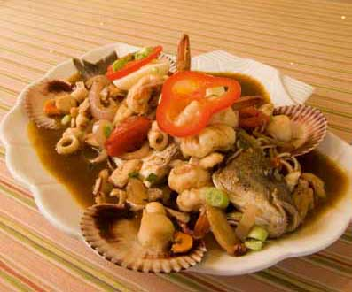

Welcome to Recetas de mariscos
Recetas de Marisco - 805 recetas fáciles y gourmet
2021.06.23 22:05Descubre Aperitivos y tapas Arroces y cereales Aves y caza Carne Cócteles y bebidas Consejos de cocina Ensaladas Guisos y Potajes Huevos y lácteos Legumbres Mariscos Pan y bollería Pasta Pescado Postres Salsas Sopas y cremas Verduras Recetas Mariscos
Recetas de Mariscos
(805) ¡Las mejores recetas de marisco! ¿Te apetece disfrutar de una cena de marisco en casa? En este completo listado encontrarás platos de mariscos variados y deliciosos, como la tradicional sopa de marisco, el popular salpicón de marisco o recetas de marisco en salsa. Y si buscas recetas con marisco congelado, ¡también las tenemos! Así mismo, mostramos diferentes recetas de marisco para Navidad y otras fechas señaladas. Compartimos muchas recetas de marisco fáciles, originales, gourmet y llenas de sabor, solo tienes que navegar entre ellas para escoger la que más te llame la atención y ponerte manos a la obra. Filtrar resultados Filtrar por: Dificultad Muy baja 8 Baja 277 Media 128 Alta 21 Muy alta 1 Para Entrante 199 Plato principal 117 Cena 3 Acompañamiento 2 Merienda 1 Categoría Mariscos 805 Camarones 169 Calamares 97 Langostinos 76 Pulpo 70 Gambas 64 Mejillones 52 Almejas 48 Crustáceos 37 Vieiras 27 Langosta 26 Otros mariscos 22 Sepia 22 Ostra 19 Cangrejo 17 Berberechos 8 Duración 10m 17 15m 71 30m 134 45m 95 1h 30m 43 2h 30m 1 3h 1 4h 2 6h 1 24h 1 Propiedades Sin gluten 10 Sin lactosa 16 Sin azúcar 10 Alimentación Veganos 1 Macrobióticos 3 Perder peso 13 Cocción Salteado 59 Frito 58 Hervido 37 Estofado 34 Plancha 29 Al horno 24 Marinado 16 Al vapor 10 En frío 8 Thermomix 8 Sin cocción 5 Al microondas 3 En sartén 2 Olla a presión 2 Parrilla 2 Temporada Primavera-Verano 29 Navidad 17 Otoño-Invierno 13 Semana Santa 4 Otras fiestas 3 San Valentín 2 Año nuevo 1 Pascua 1 País España 66 México 39 Japón 6 Perú 4 Chile 2 Colombia 2 Cuba 2 Francia 1 India 1 Italia 1 Puerto Rico 1 Tailandia 1 Venezuela 1 Región Galicia 17 Sinaloa 7 Andalucía 6 País Vasco 2 Cataluña 1 La Rioja 1 Valencia 1 Veracruz 1 Nivel de picante Poco picante 41 Picante 17 Nada picante 7 Muy picante 4 Coste Barato 96 Medio 228 Caro 42 Bebida Vino blanco 107 Cerveza 9 Vino rosado 7 Cava 6 Vino tinto 3 Vino tinto de crianza 1 Dificultad baja Nuevo Receta de Aguachile verde de camarón Dificultad baja Nuevo 6 30m Entrante Aprende a preparar uno de los mejores aguachiles que existen, concretamente una receta originaria de la costa de Sinaloa, el aguachile verde de camarón. Esta receta está preparada con pepino, cebolla morada, cilantro y un ligero toque de chile serrano. Un platillo totalmente fresco y rico para degustar Dificultad baja Receta de Tortas ahogadas de camarón Dificultad baja 4 30m Plato principal Una de las tortas más famosas de México es sin duda la torta ahogada originaria de Jalisco, principalmente contenía un relleno de carnitas de puerco, pero lo cierto es que hoy en día se busca tener más variedad de rellenos y una de las recetas más populares es la torta ahogada de camarón. Destacamos que Dificultad baja Receta de Tacos gobernador Dificultad baja 4 30m Entrante Uno de los mejores tacos con marisco que hay en México es el taco gobernador, conocido con este nombre gracias a un restaurante de Sinaloa que decidió preparar este platillo en una visita del gobernador del estado al restaurante, quiso sorprender al mismo con un taco inspirado en su comida favorita. El Dificultad baja Receta de Carpaccio de gambas Dificultad baja 4 45m Entrante El carpaccio de gambas es un plato muy sencillo e ideal para un aperitivo acompañado con unas tostadas. Los carpaccios se pueden con muchos ingredientes, como carne, verduras, pescados, champiñones Se prepara cortando el producto en cuestión en láminas muy finas, para lo que en ocasiones es necesario Dificultad baja Receta de Quesadillas de camarón Dificultad baja 6 30m Entrante Si tienes antojo de algo fácil de preparar con pocos ingredientes y que tenga un sabor único, has llegado a la receta perfecta para ti, ¡unas ricas quesadillas de camarón! Pero no es cualquier guiso de camarón, esta receta está inspirada en el adobo al pastor, por lo que tendrás una combinación inigualable Dificultad baja Receta de Calamares rellenos de carne Dificultad baja 2 1h 30m Plato principal La receta de calamares rellenos de carne suele ser una comida de días festivos o de encuentros con la familia. En mi casa siempre la hemos comido en ocasiones especiales. Es una receta que necesita un poco de tiempo de preparación, pero es muy fácil de hacer. Los calamares quedan tiernos y el interior es Dificultad baja Receta de Calamares en salsa de tomate Dificultad baja 3 45m Plato principal Los calamares son un ingrediente muy apreciado en todos los platos de la gastronomía española. A la plancha, con ajo y perejil, guisados, encebollados, rellenos Existen muchas recetas excelentes que hacen del calamar un ingrediente de éxito asegurado. Para confirmarlo, en RecetasGratis te traemos una receta Especial Navidad Receta de Vieiras a la marinera Dificultad baja Especial Navidad 4 30m Entrante Las vieiras a la marinera son un plato tradicional muy popular en las fiestas navideñas, que es cuando es más fácil encontrarlas, especialmente en Galicia. Fuera de temporada podemos encontrarlas congeladas, que ya vienen limpias y preparadas para cocinarlas, son de buena calidad y quedan una vez descongeladas Dificultad muy baja Receta de Gambas al ajillo en el microondas Dificultad muy baja 4 10m Entrante Las gambas al ajillo son una de las tapas españolas por excelencia. Se trata de un aperitivo que vas a poder hacer en casa en tan solo unos poco minutos gracias al microondas. Elaboradas de esta manera, te van a quedar unas gambas al ajillo jugosas y de lo más apetecibles. Puedes hacerlas más o menos Dificultad baja Receta de Burritos de camarón Dificultad baja 4 30m Los burritos de camarón son ideales para toda la familia por el aporte nutritivo del marisco, una alternativa perfecta a los tradicionales burritos de carne. Además, son muy fáciles de preparar, resultan muy prácticos para llevarlos contigo fuera de casa y quedan realmente deliciosos. El origen de esta receta Dificultad baja Receta de Chimichangas de camarón Dificultad baja 4 30m Merienda La chimichanga es un platillo muy popular en la zona norte de México y parte del suroeste de Estados Unidos, donde existen muchas versiones con diferentes rellenos. En términos generales, la chimichanga es un burrito frito que se elabora con tortilla de harina y se rellena con carne o pescado y verduras. Dificultad baja Receta de Vieiras a la gallega Dificultad baja 4 45m Entrante Las vieiras a la gallega son un entrante con mucho sabor, un plato de marisco muy sencillo de hacer y con un resultado genial. También es ideal como tapeo, por lo que podemos elaborar varias recetas a modo de tapas. Lo más importante de este plato es limpiar bien las vieiras, el resto son pasos muy sencillos. Dificultad baja Receta de Tacos dorados de camarón Dificultad baja 5 30m Entrante La receta de tacos de camarón dorados es un platillo muy popular en la región mexicana de Sinaloa, aunque existen muchas versiones en diferentes estados de la costa. Si lo que estás buscando es un plato de pescado que sea ligero, saludable, pero también delicioso, esta es tu receta. Cuando se acerca la Dificultad baja Receta de Camarones al tamarindo Dificultad baja 2 30m Plato principal Esta receta de camarones al tamarindo es una preparación diferente y exquisita de un ingrediente tan común como lo son los camarones. Podrás sorprender a tu familia de una forma sencilla, pues la salsa de tamarindo aporta un nivel de acidez muy rico que querrás usar en otros platos. Además, el chile Dificultad media Receta de Buey de mar relleno Dificultad media 2 1h 30m Plato principal El buey de mar o txangurro es un crustáceo de la familia de los cangrejos que se encuentra en los mares del norte, además de en el océano Atlántico y el mar Mediterráneo. En la cocina, se suele preparar esta receta de buey de mar relleno para las festividades como la Navidad o cualquier evento importante. En Dificultad media Receta de Caldo de camarón con chipotle Dificultad media 10 45m Plato principal Un buen caldo de camarón es el platillo ideal para cualquier día de la semana. Suele parecer una receta complicada, pero no es así; es tan sencilla de preparar que se volverá una de tus recetas favoritas y querrás hacerla y comerla a todas horas. El toque del chipotle hará aún más rico este caldo, así que Dificultad baja Receta de Langostinos en salsa marinera Dificultad baja 2 15m Si buscas opciones deliciosas para preparar en cualquier celebración o en las fiestas de Navidad, esta receta de langostinos en salsa marinera quedan riquísimos y con ellos podrás salir de los típicos langostinos a la plancha de siempre. La salsa que acompaña los langostinos a la marinera gustará mucho Especial Navidad Receta de Gulas con gambas al ajillo Dificultad muy baja Especial Navidad 4 30m Entrante En esta ocasión aprenderemos a preparar un plato sencillo, pero intenso en cuanto al sabor. Se trata de unas deliciosas gulas con gambas al ajillo, un plato perfecto para servir durante el aperitivo, como entrante o acompañamiento. Además, es ideal para ocasiones especiales porque nos recuerda a una Dificultad muy baja Receta de Gambones al microondas Dificultad muy baja 2 10m Entrante Los gambones o langostinos son una exquisitez de las que podemos disfrutar durante todo el año, pero es una favorita especial de las fechas navideñas. Se pueden encontrar frescos o congelados, y se pueden preparar a la plancha, al horno y de muchas otras formas. En esta ocasión, vamos a preparar una Dificultad baja Receta de Pastel de puerros y gambas Dificultad baja 4 1h 30m Plato principal Existen muchas versiones de pasteles dulces y salados y, en esta ocasión, en RecetasGratis decidimos preparar una diferente: se trata de una receta de pastel de puerros y gambas que es muy sencilla de hacer y queda con un sabor y textura deliciosos. Los ingredientes principales de este quiche, además Dificultad media Receta de Chipirones rellenos en su tinta Dificultad media 3 1h 30m Plato principal Los chipirones y calamares tienen muchos adeptos, puesto que nos ayudan a preparar platos exquisitos y muy variados. Los más consumidos suelen ser los chipirones rebozados o en tempura, no hay duda del porqué: son deliciosos, crujientes y perfectos para compartir con amigos. Sin embargo, en esta ocasión Dificultad baja Receta de Langostinos al whisky Dificultad baja 4 30m Esta receta de langostinos al whisky que te traemos esta oportunidad es una preparación muy sencilla y con una salsita muy rica que da mucho sabor y jugosidad. El toque del whisky le da ese sabor fuerte, mientras que la mantequilla suaviza la salsa y le da cremosidad. Todo se combina de forma genial Dificultad media Receta de Langostinos al curry Dificultad media 4 45m Si buscas un estupendo plato de langostinos, esta receta de langostinos al curry thai es una opción con mucho sabor. Es un plato que se prepara en poco tiempo, pero que absorbe muy bien los sabores de una deliciosa salsa de curry. Es perfecta como entrante, acompañamiento o para el picoteo. En RecetasGratis Dificultad media Receta de Calamares a la romana con cerveza Dificultad media 4 45m Entrante Los calamares a la romana son unas anillas de calamar rebozados en una masa crujiente. Hay varias maneras de hacerlos y esta que compartimos en RecetasGratis se prepara con cerveza, que hace que queden más ricos y crujientes. En definitiva, te quedará un rebozado de calamares como en los bares, ¡ya lo Dificultad muy baja Receta de Coquinas al ajillo Dificultad muy baja 4 30m Entrante ¿Conoces las coquinas? Son unos pequeños moluscos que suelen encontrarse en el mar apenas enterradas en la arena dentro del agua, tienen una forma ovalada y son del tamaño de medio dedo. Comerlas al vapor preparadas con una deliciosa salsa se convertirá automáticamente en tu mayor vicio, por ello en Dificultad baja Receta de Caldereta de marisco Dificultad baja 4 1h 30m Plato principal Existen muchos tipos de calderetas en España. Según la localidad, se elaboran con mariscos, pescados e incluso de carne de cordero, codorniz, toro o novillo, entre otros ingredientes. En esta ocasión vamos a cocinar una majestuosa caldereta de marisco, ideal para servir durante una celebración o para Dificultad muy baja Receta de Mejillones al vapor Dificultad muy baja 4 15m Los mejillones son riquísimos y fáciles de preparar, un auténtico manjar gastronómico muy saludable y nutritivo. En esta ocasión, en RecetasGratis te traemos una receta de mejillones al vapor con limón muy simple, pero con mucho sabor. De todos modos, si quieres añadir otros sabores, más adelante te daremos Dificultad media Receta de Mejillones tigre Dificultad media 5 1h 30m Entrante Mejillones tigre, una tapa de origen gallego que ya está extendida por todo el país debido a su increíble sabor. Los mejillones tigre consisten en preparar una masa con los mejillones, usarla para rellenar las conchas, rebozarlas y freírlas. Son un excelente aperitivo que podemos preparar con antelación Dificultad baja Receta de Zamburiñas en salsa gallega Dificultad baja 2 30m Entrante Zamburiñas a la gallega, una deliciosa receta, sencilla y rápida de preparar. Un plato estupendo para un aperitivo, como entrante o en fiestas, ya que en Navidad no pueden faltar en una mesa gallega. La carne de la zamburiña tiene un sabor intenso a mar, es una proteína muy buena, rica en minerales, en Dificultad muy baja Receta de Mejillones con tomate Dificultad muy baja 4 45m Entrante Mejillones con tomate, un entrante o picoteo lleno de sabor, con una salsa deliciosa y perfecta para mojar pan. Se trata de un plato muy popular en España y común en los bares de tapas. Si te apetece prepararlo en casa para disfrutarlo siempre que quieras, ¡toma nota porque compartimos todos los secretos Dificultad baja Receta de Caracoles en salsa picante Dificultad baja 4 1h 30m Entrante Esta receta de caracoles en salsa picante o caracoles a la Madrileña es típica desde hace muchos años en los bares o tascas de la localidad, donde los caracoles se ofrecen como tapas y se consideran un manjar. Los caracoles son una fuente rica de hierro y minerales esenciales, además de ser bajos en Dificultad baja Receta de Almejas en salsa verde Dificultad baja 4 45m Entrante Las almejas en salsa verde son un aperitivo muy sencillo y rápido de hacer, además de saludable y muy rico. Aunque podemos cocinar las almejas de varias maneras, al vapor quedan exquisitas porque se cuecen en su mismo agua y no pierden nada de sabor. Y si a esto añadimos alguna salsa, como la salsa verde Dificultad baja Receta de Berberechos a la marinera Dificultad baja 4 30m Entrante Los berberechos abarcan varias especies de moluscos bivalvos que se encuentran en muchas playas del mundo. Con ellos se pueden preparar una gran diversidad de platos, ya sea que los sirvamos como entrantes o como plato principal. Puedes disfrutarlos preparados al vapor, a la plancha, rehogados o en Dificultad muy baja Receta de Berberechos al ajillo Dificultad muy baja 4 15m Entrante Berberechos al ajillo, un plato sencillo y rápido de preparar, ideal para un entrante o un aperitivo. Para cocinar estos berberechos y conseguir el máximo sabor lo importante es que sean frescos. Así mismo, hay que lavarlos bien para que no tengan tierra, ya que a la hora de comer es algo incómodo masticar Dificultad baja Receta de Langostinos cocidos Dificultad baja 2 15m Entrante ¿Te gustaría servir un aperitivo apetitoso, sencillo y hecho por ti? Pues anímate con esta receta de langostinos cocidos porque es muy fácil y rápida. En RecetasGratis te enseñamos a prepararlos tanto si son frescos como si son congelados y te mostramos cómo servirlos, así como las calorías que tienen Dificultad media Receta de Albóndigas de choco Dificultad media 4 1h 30m Albóndigas de choco, una delicia sencilla de preparar. Esta receta es muy típica de la zona de Andalucía, específicamente de Huelva, y la puedes encontrar en bares como tapas o como plato principal. Puedes encontrar los chocos en cualquier pescadería y, si no los encuentras, también puedes preparar este Dificultad baja Receta de Cóctel de gambas con piña Dificultad baja 4 30m Entrante Este coctel de gambas con piña es un entrante ideal para empezar una comida o cena especial, es fácil de digerir y sus ingredientes nos brindan un sabor único y tropical perfecto para abrir el apetito. Sin dudas, es una receta ligera y variada que se convierte fácilmente en el plato estrella de cualquier Dificultad media Receta de Camarones al curry Dificultad media 4 45m El curry es una mezcla de especias que puede ser más o menos picante. Aunque es de origen hindú, hoy en día el curry tiene un lugar en muchas cocinas del mundo. Los aromas y sabores del curry le dan a muchos platos de carne y de vegetales un increíble sabor que deleita a los paladares más exigentes. Por Especial Navidad Receta de Gambas al cava Dificultad baja Especial Navidad 2 15m Entrante Gambas al cava, una receta fácil y perfecta para Navidad, puesto que este es uno de los momentos del año en el que más marisco consumimos. De hecho, en la mayoría de los hogares podemos encontrar recetas de gambas, camarones o langostinos, acompañadas de otros platos igualmente suculentos. En general, Dificultad baja Receta de Gambas al pil pil Dificultad baja 4 15m Las gambas al pil pil son una receta sencilla e ideal para preparar durante las fiestas, ya sea como acompañamiento o aperitivo. Se pueden preparar con un punto picante (quedan increíbles), pero también pueden hacerse sin añadir la guindilla. Las gambas al pil pil son de origen español y son un plato típico 1 2 3 4 5 > Recetas Mariscos Volver arriba Redes sociales © recetasgratis.net 2021 Quiénes somos Contacta con nosotros Términos y Condiciones Política de privacidad Política de cookies